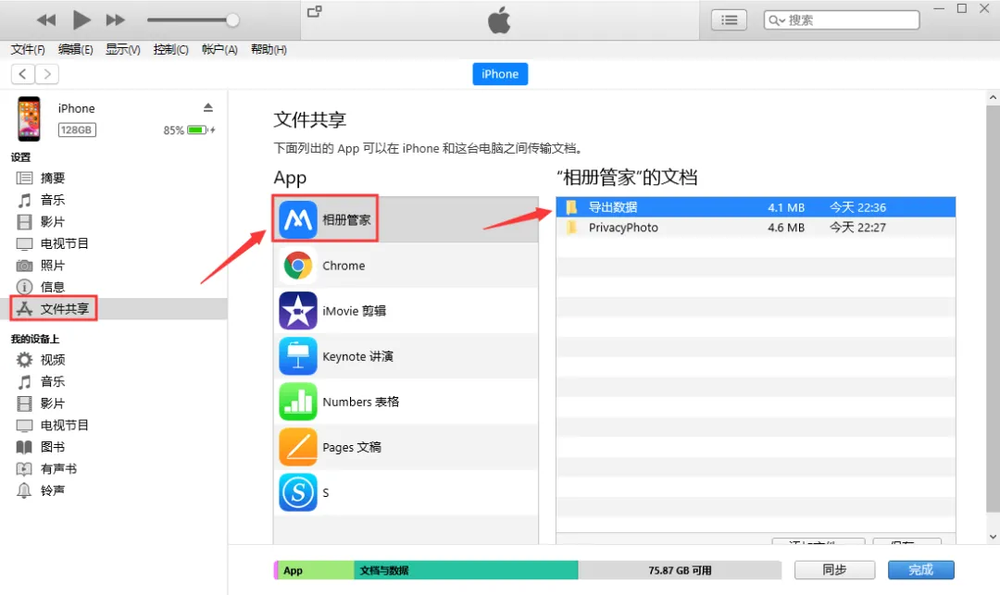

1、打开“相册管家”App，进入要导出照片、视频的相册，点击右上角“编辑”按钮，选择您要导出的照片、视频，点击下方文件夹样式的“导出”按钮，如下图所示。
3、如果想要把App中所有的照片和视频都导出到电脑，在「设置」-「通用」中点击“导出全部数据到电脑”，即可将APP中的所有数据导出到电脑。
4、打开电脑的iTunes（如未安装iTunes，请先下载并安装iTunes）。
5、使用数据线将您的iPhone连接到电脑，并信任此电脑，然后在iTunes中点击“设备图标”按钮。
6、在左侧边栏中左侧的“文件共享”，然后选择中间应用列表中的“相册管家”App，最后将右侧文档中“导出数据”的文件夹拖放到电脑即可。
您也可以点击右下方的“存储”按钮，然后在电脑上找到要存放相应文件的文件夹，再点按“存储”。
